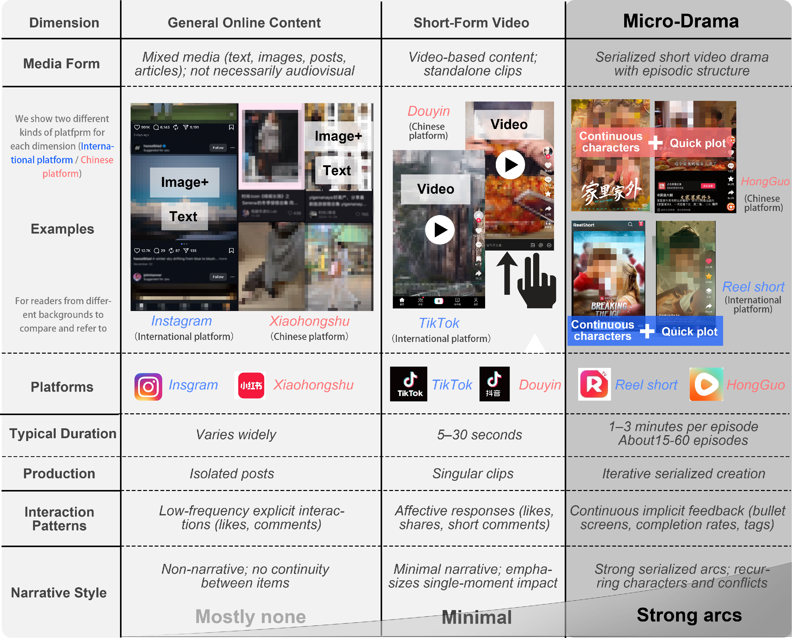
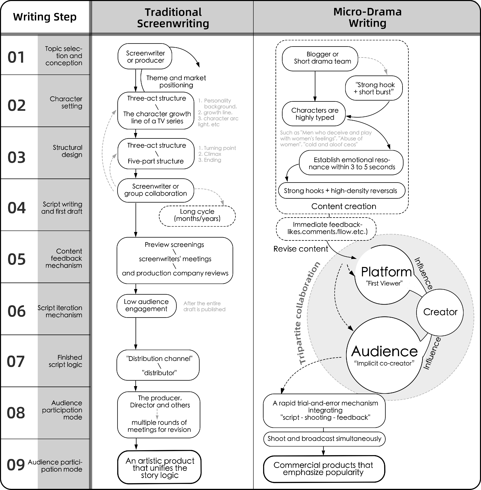
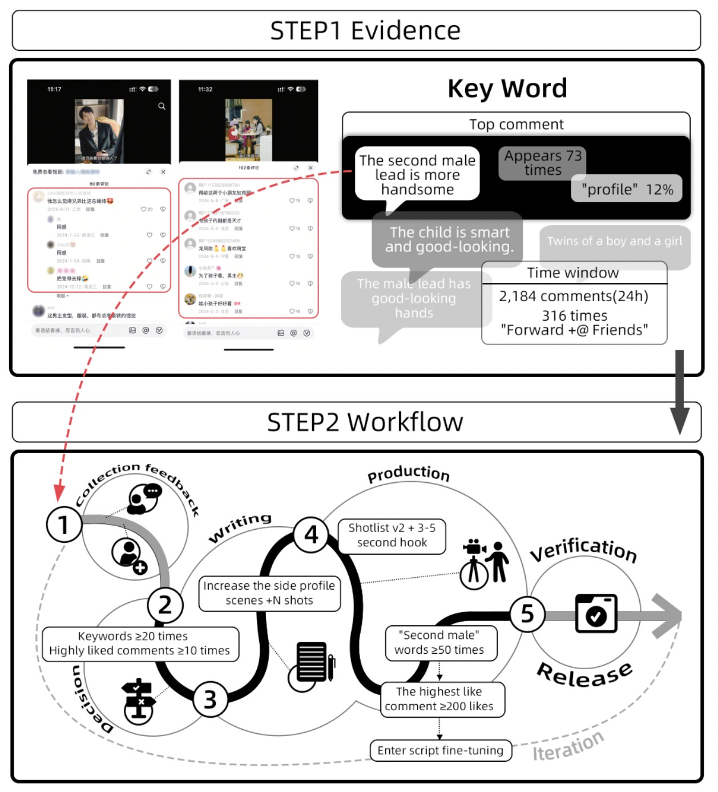
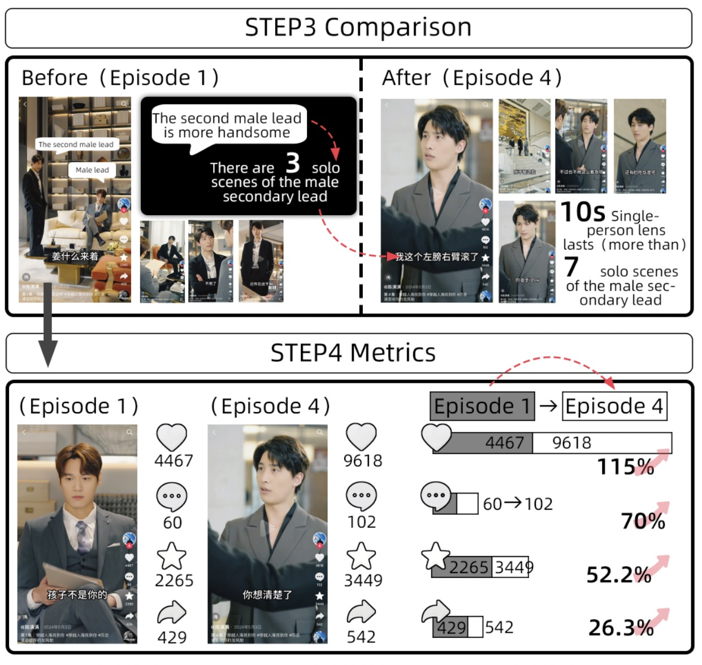

Video Preview
Video: A 10-minute overview of our findings on micro-drama production workflows and audience-in-the-loop interactions.
Abstract
Through 28 semi-structured interviews, we found that the workflow leads to writers iteratively adapting to storylines in response to real-time audience feedback. This work reveals audience interaction as a new paradigm for collaborative creative processes on social media.

Figure 1: Production workflow of “My Sweet Home”, showing how audience comments and engagement were integrated into narrative development, promotional design, and media circulation, illustrating an “audience-in-the-loop” model.
Research Questions
What emerging roles and production workflows have micro-drama creators adopted?
How do creators collaborate with audiences to iteratively shape plots and characters?
Related Work

Figure 2: Distinguishing micro-dramas from short-form videos and general online content in platformized media ecosystems.

Figure 3: Example of micro-drama interfaces: top row shows platform-level distribution and promotion; bottom row shows individual creators’ production interfaces.
1. Narrative Form: 1-3 min episodes driven by platform affordances (vertical screen, algorithmic recommendation).
2. Platform Logics: Shift from three-act structures to "hook-driven" models with blurred professional roles.
3. Participation: Integration of implicit signals (keywords, memes) into the creative decision-making process.
4. Creative Labor: Challenges of algorithmic governance, content homogenization, and asymmetric effort.
Methods
Key Results
🚀 Workflow Evolution: Transitioned from linear industrial models to "test-and-broadcast" rapid cycles. Algorithms created new roles like Traffic Operation Managers.

Figure 4: Comparative Workflow of Traditional Screenwriting and Microdrama Creation.
🔄 Iterative Feedback: Creators rely on quantitative data and textual feedback to adjust actor screen time and plot reversals in real-time.

Figure 5: Evidence-backed feedback handling workflow: from audience comments to script changes and on-screen outcomes (Step 1/2). Example source: “Mr. Li, please sign for your twins, a boy and a girl."

Figure 6: Evidence-backed feedback handling workflow: from audience comments to script changes and on-screen outcomes (Step 3/4). Example source: “Mr. Li, please sign for your twins, a boy and a girl."
🎬 Emerging Themes & Narrative Styles
• Thematic Shifts: Focus on everyday social conflicts, cross-domain functional narratives, and AI-powered spectacular genres that lower production barriers for high-budget themes.
• Narrative Innovations: Adopt fragmented-integrated storytelling, accelerated pacing, participatory interactive structures, and AI-augmented production techniques.
• Cross-Cultural Adaptation: Chinese firms dominate overseas markets with two strategies—cost-effective translation-dubbing, and culturally adaptive script rewriting—with distinct audience interaction patterns between China and the West.
Discussion
Reconstruction of Narrative Interactivity: Micro-dramas have evolved beyond pre-scripted linear works into participatory cultural products. They are constantly reshaped through a distributed interactive system of comments, memes, and hashtags. We find that audience feedback penetrates the entire creative process, where platform algorithms amplify these implicit signals to construct a dynamic narrative community of "audiences-creators-platforms".
While data alignment meets expectations, it risks content homogenization and narrative echo chambers. The discourse power often resides with a vocal minority, potentially marginalizing the "silent majority" and raising privacy concerns regarding the capture of sensitive user data in comments.
We propose transparent interpretation tools for screenwriters to maintain coherence during rapid iteration. Systems should shift from short-term "click-bait" metrics to long-term satisfaction and robust privacy protection mechanisms.
Design Implications
- Signal Transparency: Provide creators with tools to decode complex audience sentiment beyond simple metrics.
- Ecosystem Diversity: Implement mechanisms to protect minority opinions and prevent algorithmic "race to the bottom" content.
- Configurable Feedback: Enable creators to toggle between different audience "perspectives" to explore alternative narrative scenarios.
Conclusion
Our findings provide a novel framework for understanding collaborative creative labor in the platformized era. By identifying the "Audience-in-the-Loop" model, this work offers design insights for a sustainable micro-drama ecosystem. We emphasize the urgent need to balance audience influence, narrative diversity, and creative autonomy in the next generation of social media entertainment platforms.